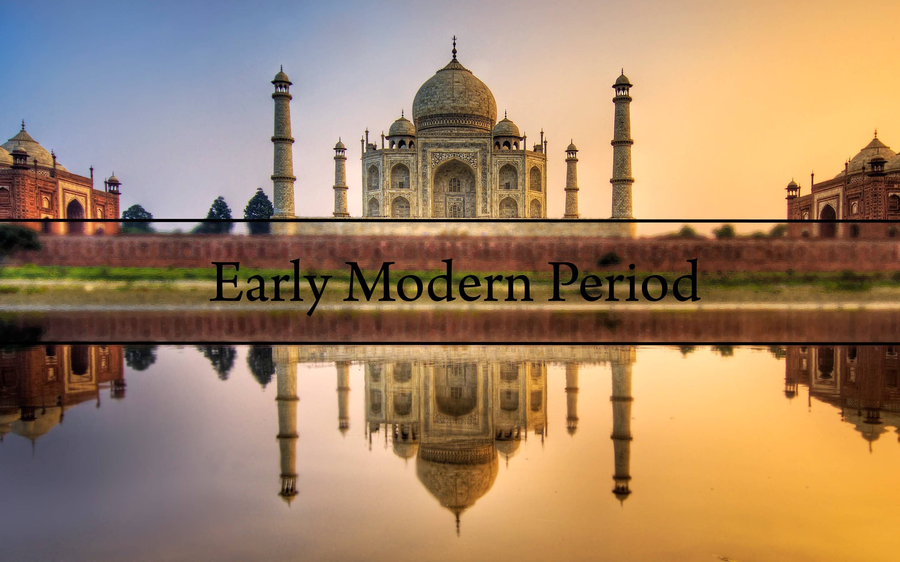
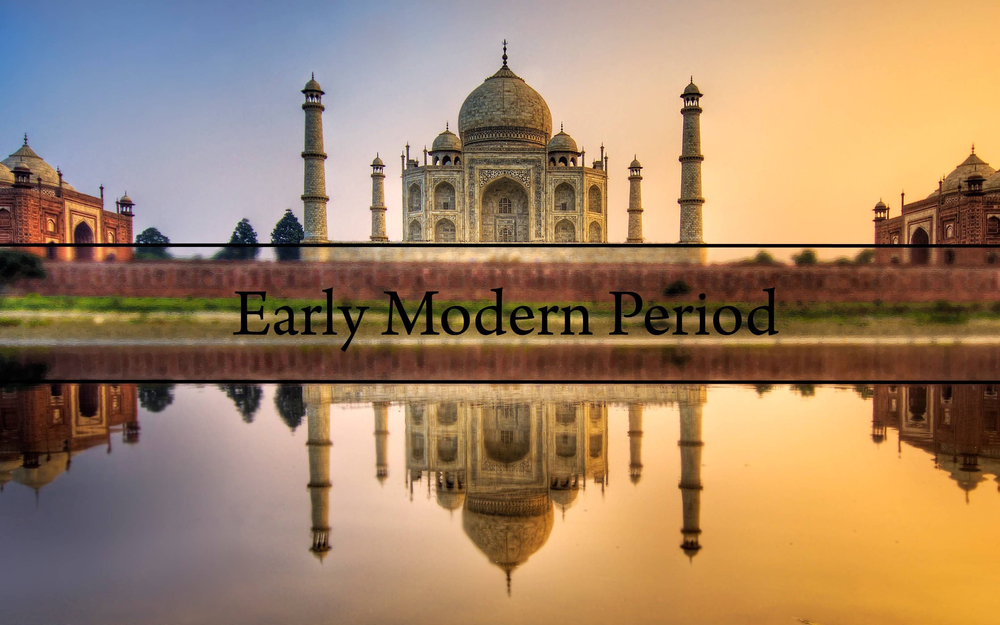

The Mughal Empire & Dynasty
In the year 1526, Babur, a a descendant of Timur and related to Genghis Khan, went across the Khyber Pass, and established the empire. His son, Humayun, was defeated by Sher Shah Suri, who took over the reins. Sher Shah Suri's son, Islam Shah Suri, further advanced his father's interests, covering North India. After this, Akbar defeated Islam Shah Suri and placed himself upon the throne. Akbar's son, Jahangir, followed the policies of his father, subjugating most of the Indian subcontinent. Jahangir's son, Shah Jahan, erected the most famous monument in all of India and quite possibly the world, the Taj Mahal. Aurangzeb was considered the last great emperor, after him the empire went into significant decline to the Maharashtrian resistance led by Chhatrapati Shivaji. In 1737, the Mughal dynasty was finally decimated, as Bajirao invaded Delhi and looted it.

Sikh and Maratha Empires
The Maratha Empire was the empire responsible for the defeat of the Mughals. It was established by Shivaji, a figure still revered in Maharashtra today. The Marathas became truly powerful, however, only under Bajirao I, a Peshwa. The remaining rulers were the Peshwas. The Sikh Empire ruled over the Northwestern regions of India, and at its peak extended from the Khyber Pass to Kashmir.
European trade and control
The new sea route discovered by Vasco Da Gama from Portugal led to an explosion in Indo-European trade, and Vasca Do Gama established trading places. The British East India Company, a trading company, was considered free for trade by the Mughal emperor at the time. The first battle they had that established a political foothold was the Battle of Plassey, in which the leader, Robert Clive, beat the Sultan of Bengal, leading them to conquer Bengal. Over a century, the British East India Company established rule over all of India.